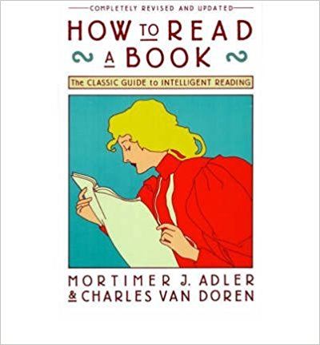

How to Read Books¶
I like the following Quota post a lot: When I was a child I ate a lot of food. Most of it is long gone and forgotten, but certainly some of it became my very bones and flesh. Personally I like reading, almost read every day and enjoying reading. This blog post is to share my experience and lessons learned how to improve the reading skills.
Book types¶
If the purpose of reading is to learn something, mainly books can be categorized into 3 types:
- The books can help you change your mindset and conceptual pattern (道)
- The books can let you learn new ways of thinking and consolidate conceptual pattern (术)
- The books can let you learn new skills and new knowledge (器)
Books also vary a lot on quality side.
So, we need to distinguish books when reading: some books can be read fast, while others need to be read carefully and repeatedly. You need to make the decision on how to read a book, feel free if you decide to do fast reading for some books.
You can learn various reading skills from book: ‘How to Read a Book’.
Some books are only for entertainment purpose. For these books, my suggestion is do whatever you want and just enjoy the reading. :)
Reading challenges and advantages¶
According to ‘Cone of Learning’ or ‘Learning Pyramid’, reading has the lowest retention rate after a period of time.

I shared exactly same experience. After several weeks I can only remember very limited content from books; after 2 years I even cannot remember whether I read a book or not.
Maybe you will ask question that why we bother reading any more, why cannot choose other more efficient methods directly? E.g. Practicing and Teach others. The followings are the reasons:
- Easy access: good books are easier to access than other resources
- Flexible time: you can control the time when to read
- Low restriction: you may encounter much more restriction, no one will stop you from reading
So reading still plays a very important role if you want to learn. However we have to learn how to maximize the return of investment (ROI) in reading.
How to read better¶
Let me emphasize again, if you can benefit limited from a book, feel free to do fast reading or simply skip it.
For some high quality books and you know you can learn a lot from them, the followings are the tips on how to read better.
Research during reading¶
When you read, do Google, look into map/wiki to do research, and take notes at the same time. It can help you understand better and deeper.
For book notes, considering digital ones. Digital notes (and books) are easier to process later.
If you read physical books, don’t bother keeping the books clean, just take notes on the books. The value of the books is to help you learn.
Review and discuss¶
Review the book notes from time to time, which will help you to deepen the understanding.
Try to tell some one else about what you learned from the book.
In order to tell, you have to understand first, organize what you learned into a ‘good story’, then you need to present it to others. This process will help you understand and remember better of what you learned from the books.
If your partner also has read the same book, it will be even better. Or you can recommend some books to your friends and then discuss with them when they finish reading.
Try to practice¶
Create some opportunities to practice what you have learned from the books, which helps you learn better.
Write out¶
After reading, write your understanding out. The format can be a blog containing the most important learning points or a mindmap.
Written by Binwei@Oslo